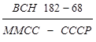
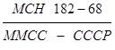
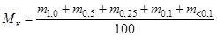
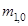
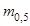
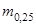
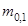
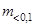
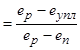

МИНИСТЕРСТВО
МОНТАЖНЫХ И СПЕЦИАЛЬНЫХ
СТРОИТЕЛЬНЫХ РАБОТ
СССР
УТВЕРЖДАЮ
Заместитель министра
монтажных и специальных
строительных работ СССР
К.К. ЛИПОДАТ
14 декабря 1981 г.
ИНСТРУКЦИЯ
ПО ГЛУБИННОМУ УПЛОТНЕНИЮ
ВОДОНАСЫЩЕННЫХ ПЕСЧАНЫХ ОСНОВАНИЙ
ВСН 182-81
ММСС СССР
МОСКВА 1982
СОДЕРЖАНИЕ
Инструкция разработана во Всесоюзном научно-исследовательском институте гидромеханизации, санитарно-технических и специальных строительных работ (ВНИИГС) Минмонтажспецстроя СССР в лаборатории намывных сооружений и оснований взамен «Временных указаний по глубинному уплотнению водонасыщенных песчаных оснований сооружений виброустановками ВНИИГС», ВСН 182-68/ММСС СССР.
Приведенные в инструкции нормативные данные и требования по глубинному уплотнению водонасыщенных песчаных оснований базируются на материалах научных исследований и результатов широкого применения виброустановки ВУУП-6 в промышленном, гражданском и гидротехническом строительстве.
Рекомендуемая технология и оборудование с простой конструкцией уплотнителя обеспечивают высокое качество и экономичность работ по глубинному уплотнению песчаных оснований в сравнении с другими способами.
Инструкция составлена: канд. техн. наук, заслуженным строителем РСФСР В.М. Зубковым, инженером В.М. Анисимовым и канд. техн. наук Е.Д. Ковалевским.
|
Минмонтажспецстрой СССР |
Ведомственные строительные нормы |
 |
|
Инструкция по глубинному уплотнению водонасыщенных песчаных оснований |
Взамен  |
1. ОБЩИЕ ПОЛОЖЕНИЯ
1.1. Настоящая инструкция распространяется на производство работ по уплотнению водонасыщенных песчаных грунтов на глубину 6 м, виброустановкой ВУУП-6*, осуществляемых для повышения несущей способности песчаных оснований в промышленном, гражданском и гидротехническом строительстве.
*А.с. № 126803. Опубл. в Б.И., 1960, № 5.
Инструкция не распространяется на производство работ по глубинному уплотнению пылеватых песков.
1.2. Глубинное уплотнение песчаных грунтов при уровне грунтовых вод ниже 0,5 м от поверхности должно производиться с искусственным водонасыщением.
1.3. Производству работ по уплотнению песчаных оснований установкой ВУУП-6 должно предшествовать опытное уплотнение на строительной площадке.
1.4. Уплотнение песчаных оснований виброустановкой ВУУП-6 должно осуществляться по проекту производства работ в соответствии о требованиями данной инструкции, главы СНиП III-8 «Земляные сооружения» и главы СНиП III-9 «Основания и фундаменты».
|
Внесены Всесоюзным научно-исследовательским институтом гидромеханизации, санитарно-технических и специальных строительных работ (ВНИИГС) |
Утверждены Минмонтажспецстроем СССР 14 декабря 1981 г. |
Срок введения |
2. ТРЕБОВАНИЯ К ПРОЕКТУ ПРОИЗВОДСТВА РАБОТ ПО ГЛУБИННОМУ УПЛОТНЕНИЮ ПЕСЧАНЫХ ОСНОВАНИЙ
2.1. Проект производства работ по уплотнению должен содержать:
а) план площадки, подлежащей уплотнению;
б) проектную глубину уплотнения;
в) перечень оборудования для уплотнения (рыхления) и его техническую характеристику (приложение 1, рис. 6);
г) перечень оборудования для искусственного водонасыщения грунта при уровне грунтовых вод ниже 0,5 м от поверхности (приложение 1, рис. 7);
д) схему уплотнения виброустановкой ВУУП-6 (сетку уплотнения и при необходимости сотку предварительного рыхления);
е) технологический режим работы виброустановки ВУУП-6;
ж) тип установки для динамического или статического зондирования;
з) схему и глубину зондирования;
и) расчетное значение показателя уплотненного песчаного грунта, определяемое в соответствии с приложением 2;
к) состав работ по опытному уплотнению на строительной площадке, определяемый в соответствии с требованиями раздела 4 настоящей инструкции;
л) данные о наименьших расстояниях от работающей установки ВУУП-6 до существующих объектов (в том числе до подземных сооружений и коммуникаций).
2.2. Наименьшее допустимое расстояние от работающей виброустановки ВУУП-6 должно быть не менее 40 м до зданий и подземных сооружений и не менее 25 м до подземных коммуникаций.
3. ТЕХНОЛОГИЯ ГЛУБИННОГО УПЛОТНЕНИЯ
3.1. Работы по уплотнению водонасыщенных песчаных грунтов виброустановкой ВУУП-6 на строительной площадке необходимо выполнять в следующем порядке:
а) подготовка площадки (срезание плодородного слоя, планировка). При планировке площадки должна быть учтена осадка поверхности после уплотнения песка (в процентах от проектной глубины уплотняемого песчаного грунта): крупного и средней крупности - 8 %, мелкого песка - 5 %;
б) разбивка и фиксация на площадке точек погружением уплотнителя виброустановки ВУУП-6;
в) искусственное водонасыщение песчаного грунта при уровне грунтовых вод ниже 0,5 м от спланированной поверхности;
г) уплотнение грунта установкой ВУУП-6 до проектной глубины согласно проекту производства работ.
Рис. 1. Сетка точек погружения уплотнителя ВУУП-6
3.2. Для глубинного уплотнения следует принимать равностороннюю треугольную сетку со сторонами, равными: для крупного и средней крупности песка - 3 м, для мелкого песка - 2 м (рис. 1).
3.3. В песчаных грунтах, обладающих структурной прочностью, необходимо предварительно разрушить структурные связи в песке на проектную глубину уплотняемой толщи (глубинное «рыхление»)* с помощью ВУУП-6.
*А.с. № 503981. Опубл. в Б.И., 1976, № 7.
3.4. Для глубинного «рыхления» и уплотнения песчаных грунтов должна быть разбита согласно схеме, приведенной на рис. 2, квадратная сетка со сторонами, равными 2 м.
3.5. Для производства работ по уплотнению песчаных грунтов виброустановкой ВУУП-6 следует применять грузоподъемные механизмы, обеспечивающие возможность переноса виброустановки в вертикальном положении. Скорость извлечения уплотнителя грузоподъемным механизмом из грунта не должна превышать 5 м/мин.
Рис. 2. Схема расположения точек «рыхления» и уплотнения:
1 - точки уплотнения; 2 - точки «рыхления»
3.6. Соединение уплотнителя с вибропогружателем в процессе уплотнения должно быть жестким и неизменным.
3.7. Подъем и перенос виброустановки ВУУП-6 во избежание ее повреждений должны производиться плавно, без рывков.
3.8. Включение вибропогружателя В-401 должно производиться после установки уплотнителя вертикально на поверхность грунта. Запрещается включение вибропогружателя при свободно подвешенном уплотнителе.
3.9. Уплотнение песчаных грунтов на глубину 6 м следует производить в соответствии с технологическим графиком (рис. 3), который должен быть составлен по результатам опытного уплотнения на строительной площадке, осуществленного в соответствии с указаниями раздела 4 настоящей инструкции.
3.10. Полный цикл уплотнения песчаных грунтов на глубину 6 м в одной точке сетки должен продолжаться не менее 15 мин и состоять из 4 - 5 чередующихся погружений и подъемов уплотнителя. На каждой глубине погружения уплотнителя в одном цикле должен быть достигнут виброударный режим виброустановки ВУУП-6.
Рис. 3. Технологический график уплотнения песчаного грунта
3.11. Погружение уплотнителя в грунт нужно производить, не допуская натяжения троса грузоподъемного механизма и отклонения виброустановки от вертикального положения.
3.12. После проведения работ по уплотнению в четырех точках на глубину 6 м необходимо сделать технологический перерыв в работе установки продолжительностью не менее 15 мин.
3.13. В случае уплотнения грунтов, требующих предварительного глубинного «рыхления», работы по «рыхлению» и уплотнению должны производиться поочередно: сначала в четырех точках сетки по оси «рыхления», затем в трех точках по оси уплотнения.
3.14. При «рыхлении» погружение и извлечение уплотнителя должно производиться без остановок. Время на «рыхление» грунта на глубину 6 м в одной точке не должно превышать 2 мин.
3.15. В случае использования для искусственного водонасыщения песчаного грунта уплотнителя виброустановки ВУУП-6 (см. приложение 1, рис. 7) сначала должен быть включен насос (с напором не менее 80 м) для подачи воды в трубчатую штангу уплотнителя, а затем вибропогружатель. При достижении уплотнителем проектной глубины подачу воды следует прекратить и продолжать работу по уплотнению в соответствии с указанием п.3.9 настоящей инструкции.
Примерное количество воды, необходимой для насыщения песчаного грунта, определяется по таблице.
|
Удельный вес сухого грунта, кН/м3 (объемная масса скелета песка, г/см3) |
14,71 (1,50) |
15,20 (1,55) |
15,69 (1,60) |
|
Количество воды (в процентах от объема уплотняемого песка) |
50 |
45 |
40 |
3.16. Технология уплотнения насыпных или намытых песчаных оснований виброустановками ВУУП-6, аналогична технологии уплотнения естественных песчаных оснований.
3.17. В процессе производства работ по уплотнению на строительной площадке следует вести журнал по форме, приведенной в приложении 3.
4. ОПЫТНОЕ УПЛОТНЕНИЕ ПЕСЧАНЫХ ГРУНТОВ
4.1. В результате опытного уплотнения должен быть определен технологический режим уплотнения, устанавливающий минимальное время, необходимое для достижения наибольшей плотности песчаного грунта.
4.2. В состав работ по опытному уплотнению входят:
а) выбор и подготовка опытного участка (снятие плодородного слоя почвы, планировка);
б) разбивка сетки рыхления и уплотнения;
в) опытное уплотнение;
г) зондирование водонасыщенного песчаного грунта до и после уплотнения;
д) водопонижение для проходки шурфа и отбора образцов грунта;
е) проходка шурфа;
ж) отбор из шурфа образцов грунта;
з) камеральная обработка результатов зондирования и лабораторных определений плотности грунта по образцам.
4.3. Опытный участок следует располагать в пределах подлежащего уплотнению песчаного основания на площадке, имеющей наиболее характерные гранулометрический состав и плотность сложения песчаного грунта. Размер опытного участка не менее чем 10´10 м.
4.4. Уплотнение песчаного грунта без «рыхления» следует производить в семи точках, а с «рыхлением» в шести (рис. 4). После уплотнения необходимо зафиксировать колышками фактические места погружения уплотнителя для проведения зондирования.
Рис. 4. Схемы выполнения работ на участке опытного уплотнения песка:
а - без «рыхления»; б - с предварительным рыхлением.
1 - точки уплотнения; 2 - точки рыхления; 3 - зондирование до уплотнения; 4 - зондирование после уплотнения
4.5. Оценка уплотнения песчаных грунтов должна производиться по показателям удельного веса сухого грунта γc и относительной плотности ID, учитывающей как зерновой состав, так и форму частиц песчаного грунта. Показатели достигнутой плотности грунта по результатам зондирования должны быть сопоставлены с данными плотности сложения грунта образцов, отобранных из шурфов.
Значения показателей плотности по результатам зондирования и по отобранным образцам грунта должны быть определены в результате статистической обработки.
4.6. Зондирование и отбор образцов уплотненных песчаных грунтов следует производить не ранее чем через 2 недели в местах, указанных на рис. 4 (в соответствии с ГОСТ 19912 «Грунты. Метод полевого испытания динамическим зондированием» и ГОСТ 20069 - 74 «Грунты. Метод полевого испытания статическим зондированием»), при этом глубина зондирования должна быть ниже проектной отметки уплотнения на 1 м.
4.7. Шурф размерами в плане 2´1,5 м, глубиной не менее 3 м должен быть расположен на опытном участке таким образом, чтобы имелась возможность отбора образцов грунта из него в точке погружения уплотнителя и между двумя соседними точками погружения.
4.8. При проходке шурфа через каждые 50 см следует производить отбор шести образцов грунта.
4.9. По отобранным образцам определяют гранулометрический состав, удельный вес сухого грунта γc и относительную плотность грунта ID. Среднее значение ID уплотняемого на проектную глубину грунта не должно быть менее 0,66.
Данные по отбору образцов грунта заносят в журнал, форма которого приведена в приложении 4.
4.10. На выполненные работы по опытному уплотнению песчаного грунта должен быть оформлен акт, в котором следует указать технологический режим уплотнения, графики зондирования и данные по п. 4.9. На основе акта в проект производства работ при необходимости должны быть внесены соответствующие изменения.
5. КОНТРОЛЬ КАЧЕСТВА УПЛОТНЕНИЯ И ПРИЕМКА РАБОТ
5.1. Контроль качества уплотнения песчаных грунтов следует проводить согласно требованиям настоящей инструкции главы СНиП III-8 «Земляные сооружения».
5.2. В качестве основного метода контроля уплотнения песчаного грунта следует применять: для крупных и средней крупности песков - динамическое зондирование, для мелких песков - статическое зондирование, результаты которых должны сопоставляться с данными опытного уплотнения. Глубина зондирования должна быть больше проектной глубины уплотнения на 1 м.
5.3. Допустимое отклонение уменьшения плотности грунта от проектной не должно превышать 0,05 г/см3 (0,49 кН/м3), при этом количество определений, давших большие значения, не должно превышать 10 % от их общего числа.
5.4. Приемку уплотненного основания следует производить согласно требованиям главы СНиП «Земляные сооружения» по приемке оснований сооружений.
5.5. Акт освидетельствования скрытых работ составляют представители организации, выполнявшей уплотнение, подрядчика, заказчика и авторского надзора в соответствии с требованиями СНиП III-I - 76.
6. ТЕХНИКА БЕЗОПАСНОСТИ ПРИ ГЛУБИННОМ УПЛОТНЕНИИ
6.1. При глубинном уплотнении песчаных оснований виброустановками ВУУП-6 должны выполняться правила техники безопасности, предусмотренные главой СНиП III-4 «Техника безопасности в строительстве», «Положением о режиме труда работников виброопаcных профессий, организаций и предприятий Минмонтажспецстроя СССР» ВСН 318-73/ММСС СССР, а также требованиями данного раздела.
6.2. При внезапной остановке вибропогружателя по техническим причинам запрещается извлекать уплотнитель из грунта без вибрации. После устранения неисправности вибропогружателя включают вибратор и вибрируют песок в течение 1 мин, после чего необходимо погрузить уплотнитель на 0,5 м, а затем со скоростью не более 3 м/мин извлечь из грунта.
6.3. В случае переноса виброустановки последняя должна быть поднята не менее чем на 0,5 м выше встречающихся на пути препятствий.
6.4. При перерывах в работе и после окончания работ по уплотнению песчаных оснований виброустановку следует опускать на настил или на сухой грунт, оберегая вибропогружатель от попадания в него песка.
6.5. Ответственный за техническую исправность виброустановки обязан не реже двух раз в смену производить тщательный осмотр: состояния болтовых соединений вибропогружателя и уплотнителя; привода электродвигателя; шарниров подвески; концевых гаек, валов; соединения электрического кабеля; сварных швов виброустановки.
6.6. Шурф на площадке опытного уплотнения песчаных грунтов роют с креплением стенок, не допуская при этом нарушения структуры грунта в местах отбора образцов.
Приложение 1
ОБОРУДОВАНИЕ ДЛЯ ГЛУБИННОГО ВИБРОУПЛОТНЕНИЯ ПЕСЧАНЫХ ОСНОВАНИЙ
Виброустановка ВНИИГС ВУУП-6 состоит из уплотнителя и вибропогружателя В-401 (рис. 5).
Рис. 5. Виброустановка ВУУП-6
Техническая характеристика виброустановки ВУУП-6
Мощность уплотняемого слоя, м.................................................................................... 6
Продолжительность цикла уплотнения, мин............................................................. 15
Производительность, м/ч.................................................................................... 170 -210
Тип вибропогружателя............................................................................................ В-401
Мощность электродвигателя, кВт................................................................................ 55
Частота вращения электродвигателя, об/мин......................................................... 1470
Масса уплотнителя, кг................................................................................................. 920
Высота уплотнителя, м.................................................................................................... 7
Диаметр уплотнителя, мм......................................................................................... 1000
Частота вынужденных колебаний, кол./мин............................................. 1500 (25 Гц)
Амплитуда колебаний, мм........................................................................................... 5-6
Общая высота виброустановки, м............................................................................... 8,8
Масса виброустановки, кг........................................................................................ 3400
Грузоподъемность механизма, обслуживающего виброустановку, т...... Не менее 6
Стоимость уплотнения 1 м грунта (в ценах 1975 г.), коп......................................... 25
Стоимость уплотнения 1 м грунта при искусственном водонасыщении (уточняется проектом производства работ), коп. 30-35
Примечание. Рабочие чертежи виброустановки ВУУП-6 имеются во ВНИИГС (193148, Ленинград, ул. Карловская, 4).
Уплотнитель (рис. 6) представляет собой сварную металлическую пространственную конструкцию, детали которой не требуют станочной обработки, и он может быть изготовлен силами строительной организации. Конструкция уплотнителя виброустановки ВУУП-6 для искусственного водонасыщения грунта представлена на рис. 7.
Рис. 6. Уплотнитель виброустановки ВУУП-6
Рис. 7. Уплотнитель виброустановки ВУУП-6 для искусственного водонасыщения грунта
Приложение 2
ОПРЕДЕЛЕНИЕ СТЕПЕНИ УПЛОТНЕНИЯ И РАСЧЕТНЫХ ЗНАЧЕНИЙ ПРОЧНОСТНЫХ И ДЕФОРМАЦИОННЫХ ХАРАКТЕРИСТИК ПЕСЧАНОГО ГРУНТА
Рис. 8. График для определения удельного веса сухого грунта различной крупности после уплотнения виброустановкой ВУУП-6
Для предварительной оценки уплотнения песчаного основания виброустановкой ВУУП-6 расчетная величина удельного веса сухого грунта γc в пределах всей глубины уплотненного грунтового массива может быть определена из графика зависимости значения γc от модуля крупности МК уплотняемого песка (рис. 8). Значения М принимаются по данным инженерно-геологических изысканий.
Модуль крупности песка определяют по данным гранулометрического состава уплотняемого песка и вычисляют по формуле:

где 




Степень уплотнения песчаного основания характеризует показатель относительной плотности, определяемой по формуле
 ID
ID
где eр и en - коэффициенты пористости песчаного грунта в соответственно максимально рыхлом и максимально плотном сложении, значения которых определяют на образцах песка, подлежащего уплотнению (по данным инженерно-геологических изысканий);
eупл - коэффициент пористости песчаного грунта после уплотнения виброустановкой ВУУП-6, определяемый по графику на рис. 8.
Для расчета принимают средние арифметические значения eр и en по результатам не менее чем шести определений.
Значение модулей деформации Е и углов внутреннего трения φн после глубинного уплотнения песчаного грунта виброустановкой ВУУП-6 следует принимать по табл. 1 приложения 22 главы СНиП II-15 «Основания зданий и сооружений» при коэффициенте пористости, равном eупл. Удельное сцепление сн уплотненных песков принимается равным нулю.